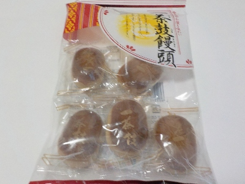

ラマンの一茶鼓饅頭。
2024/12/19

お饅頭が5個入ってました。袋が大きいので、以前は6個入ってたのかな？勝手な想像です。
この手のお饅頭の定番的な味の商品だと思いました。ホクホクとしていてお茶によく合うお菓子です。
愛知県海部郡大治町大字西條字苅屋橋63番地の1
2024/12/19

お饅頭が5個入ってました。袋が大きいので、以前は6個入ってたのかな？勝手な想像です。
この手のお饅頭の定番的な味の商品だと思いました。ホクホクとしていてお茶によく合うお菓子です。